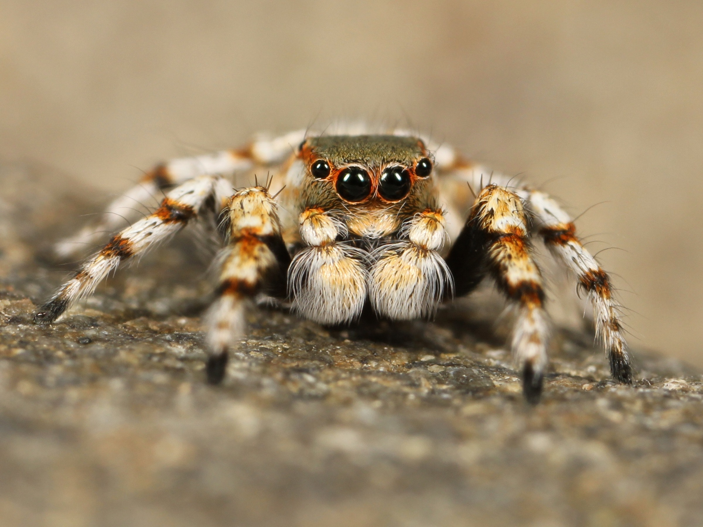

Clinica Dr. Pet.com.cuidado


| Serviços |
| Serviços |
Valor |
| Banho simples |
R$30,00 |
Banho com tosa |
R$50,00 |
| Aplicação de vacina |
R$40,00 |
| Corte de unhas |
R$50,00 |
|
Profissionais
- Dr. Dolittle - Médico e Proprietário
- Zé Gotinha - Enfermeiro e Gerente
- Arnaldo Antunes - Banhista e Tosador